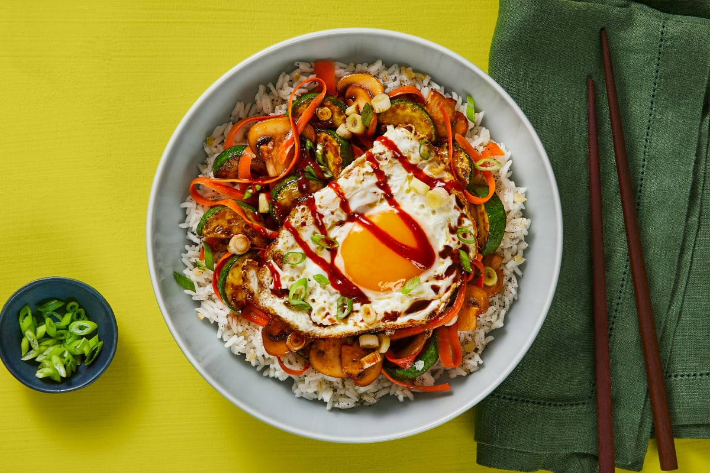

Vegetarian Bibimbap

Description
Vegetarian Bibimbap Recipe with loads of vegetables and homemade Korean-inspired bibimbap sauce that tastes savory, sweet, tangy, and little spicy! Don’t forget to add the super crispy fried egg to your bibimbap rice bowl and mix it all up into one big bowl of deliciousness!
Ingredients
- 3 medium zucchinis
- 3 medium carrots
- 10 oz. mung bean sprouts
- 10-15 oz. spinach
- 1/2 tsp fine sea salt, for each vegetable item or to taste
- 1.5- 2 tsp grated garlic, for each vegetable item or to taste
- 2-3 tsp Toasted sesame oil, for each vegetable item or to taste
- 3-4 bulbs scallions, chopped, about 1 bulb for each vegetable item
- Toasted white sesame seeds, sprinkle
- 1 tbsp coconut aminos, for each vegetable item or to taste, optional
Bibimbap Sauce
- 6 whole medjool dates, torn apart with your hands
- 3 tbsp water
- 2.5 tbsp apple cider vinegar
- 2-3 tsp gochugaru, or 1 tsp cayenne pepper
- 2.5 tbsp tomato paste
- 2 tbsp coconut aminos
- 1/2 tsp garlic powder
- 1/2 tsp onion powder
- Little salt to taste
- 1 tsp toasted sesame oil
- 1 tsp apple cider vinegar, or rice vinegar, to taste
Other
- 1-1.5 tbsp avocado oil, to saute zucchini
- 4 large eggs, pan fried sunny side up
- Cauliflower fried rice, or steamed white rice
Steps
For the zucchini, if using:
- Slice the zucchini to a little thinner than ¼-inch (0.6 cm) in thickness or use a mandolin slicer. Sprinkle 1.5 tsp fine sea salt and gently rub the salt into each slice. Let sit at room temperature for at least 20 minutes or up to 1 hour. Squeeze out the water then do a quick saute with avocado oil, garlic, and sesame oil. Sprinkle scallions and sesame seeds. Chill in the fridge.
For the carrots, mung bean sprouts, and spinach:
- Julienne the carrots. These vegetables have the same cooking steps but please cook them separately. Bring a large pot of water to boil and season with some salt. Hot water blanches the carrots for 2 minutes, bean sprouts for 2 minutes, and spinach for 30 seconds. Soak in cold water and squeeze out the liquid. In a big mixing bowl, season each vegetable item with salt, garlic, sesame oil, scallions, and sesame seeds. Taste and adjust the salt quantity. Chill in the fridge. I like to add a tablespoon of coconut aminos for extra flavor but that’s totally optional.
For the bibimbap sauce:
- In a small food processor, add the ingredients from the dates to salt. Blend a few times until you get a smooth paste. You might need to scrape the bowl a few times. Transfer the paste to a small bowl. Stir-in the sesame oil and vinegar. Adjust the vinegar quantity to taste.
To assemble:
- Add the cooked rice (or cauliflower rice) to the bottom of serving bowls, place each vegetable item on top of the rice. I like to alternate the colors between the vegetables so they look colorful. Top with a sunny side up fried egg, a big spoonful of homemade bibimbap sauce, and a teaspoon sesame seeds. Mix it all up with a spoon and dig-in!